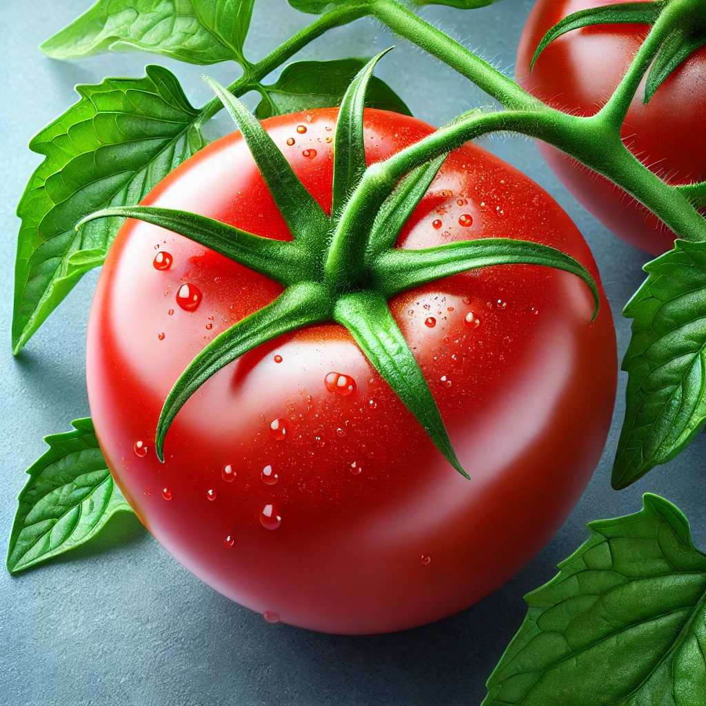
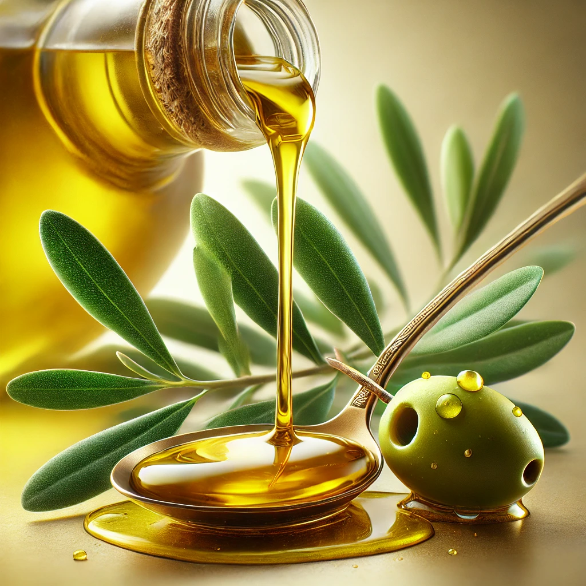
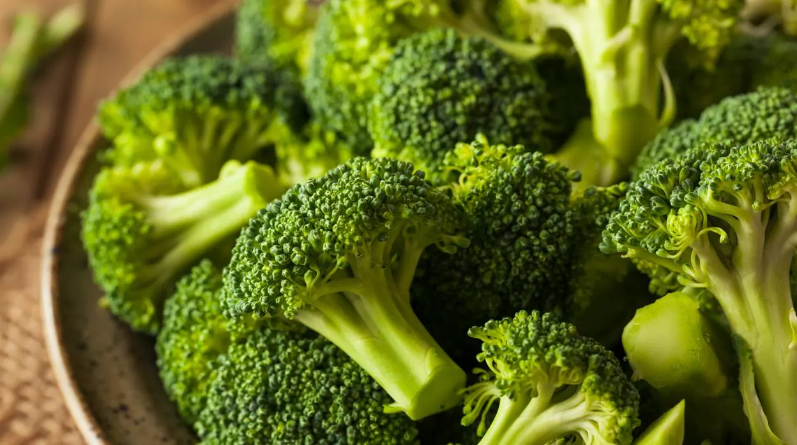
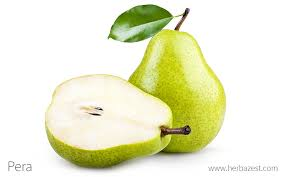
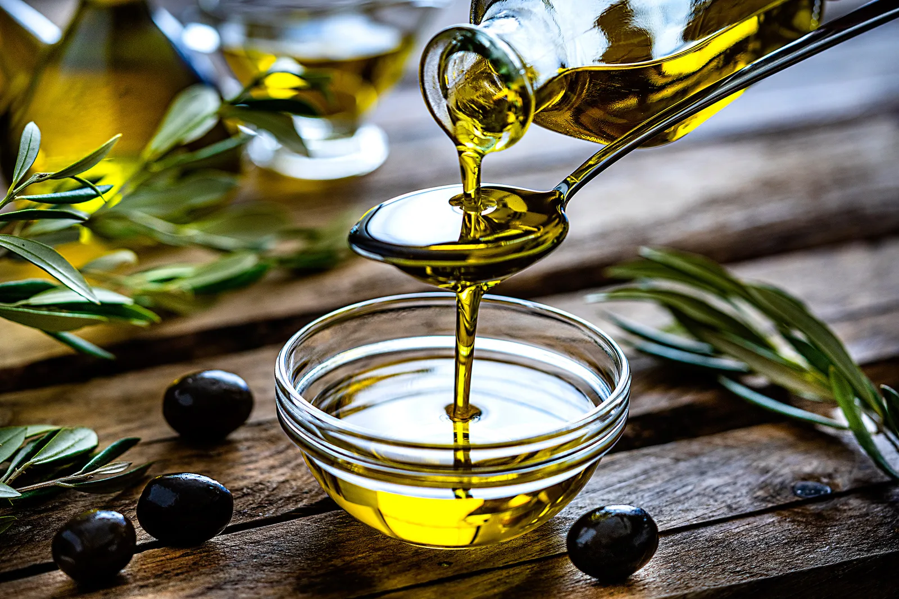
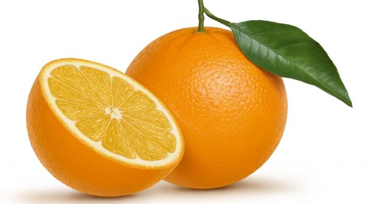
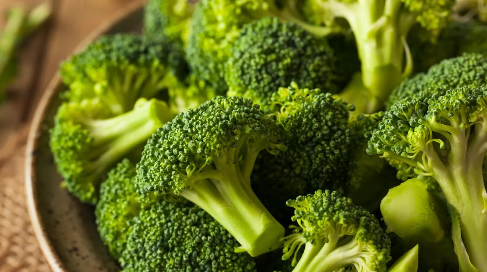
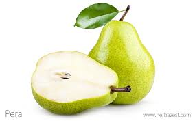
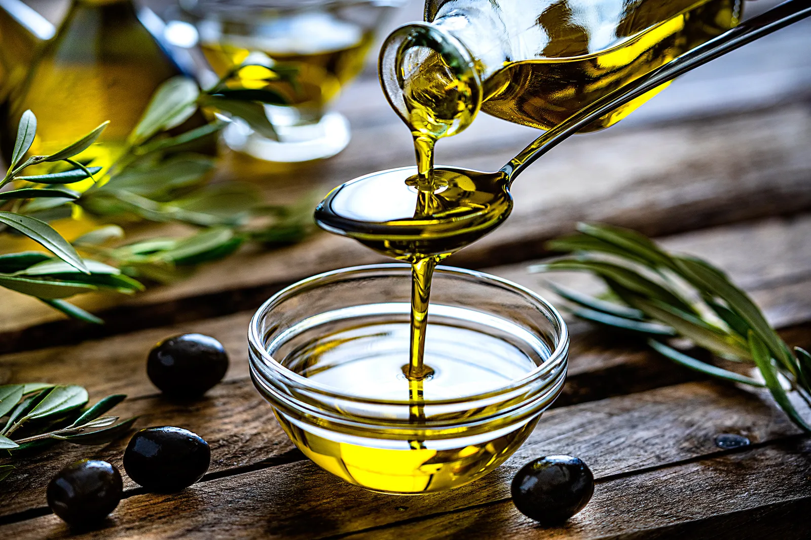
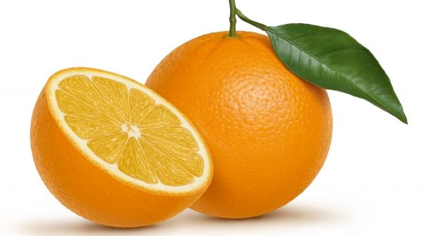

¿Buscas productos fresquitos?


Entonces sigue el aroma del olivo
Sobre Nosotros
En Los Olivos, nos dedicamos a la venta de productos frescos y de alta calidad, incluyendo frutas, vegetales y otros productos naturales en Panamá. Trabajamos de la mano con agricultores locales para ofrecer a nuestros clientes lo mejor de cada cosecha, promoviendo prácticas sostenibles y apoyando la economía local. Nuestro compromiso es llevar a tu mesa productos frescos, nutritivos y cultivados con amor.
Los mejores productos cerquita de ti
 






